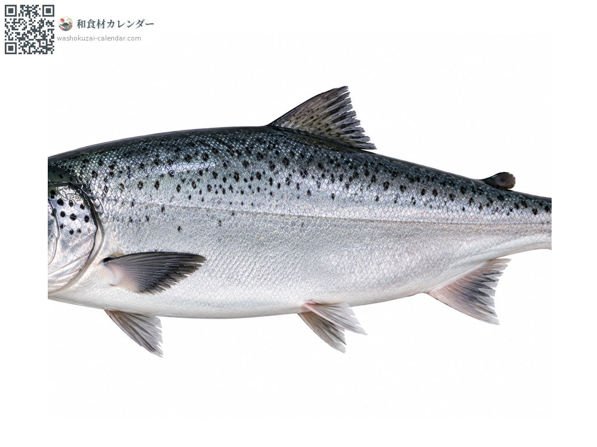
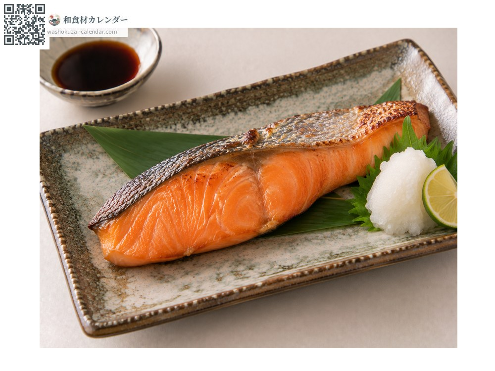
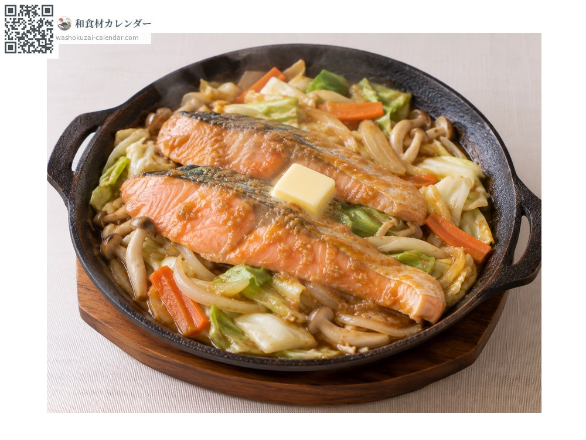
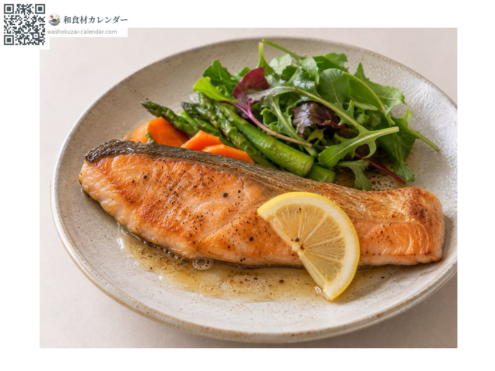
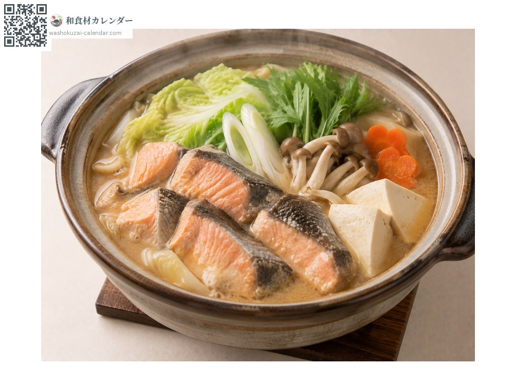

海鮮
鮭魚
サケ さけ sake
別名sake、shake
當令時期為9月、10月、11月

當令時期
1月
2月
3月
4月
5月
6月
7月
8月
9月
10月
11月
12月
當令有供應
料理方式

鹽烤
最經典的做法。烤到魚皮焦香。

味噌鐵板燒魚配蔬菜
與蔬菜、味噌一同鐵板蒸烤，是北海道的鄉土料理。

香煎奶油魚排
奶油香煎後擠檸檬。

石狩鍋（鮭魚味噌火鍋）
魚頭魚骨與蔬菜以味噌湯底燉煮。
挑選方式
魚肉顏色深且均勻、白色紋理細緻。切片邊緣不鬆散。
保存方式
切片擦乾水分後包保鮮膜冷藏。也能冷凍，容易處理。
主要產地
小知識
溯河前油脂特別豐厚的個體稱為「時鮭」「鮭兒」，被當作珍品看待。